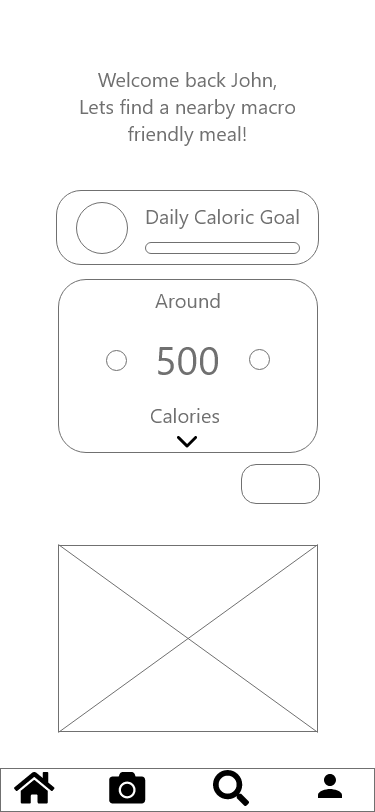

Introduction
Macro n’ Cheese is a concept mobile application that allows users to easily find meals that fit their nutritional diet while eating out.
The Problem Space
Today restaurants are primarily focused on presenting dishes that are delicious, but they are often loaded with excess unwanted calories. People believe it to be difficult or near impossible to adhere to their diet or nutrition goals when ordering takeout or dining with friends at these establishments.
How might we make it easier for users to find foods that meet their nutritional goals while eating out?
How might we make it easier for users to find foods that meet their nutritional goals while eating out?
My Approach
Research
My research consisted of conducting online surveys and virtual interviews with individuals in the target demographic. From the primary research I discovered:
○ Users primarily look at overall calorie contents and macro nutritional information
○ Majority of the individuals use some nutrition tracking app but find a lot of information unreliable
○ Individuals find it difficult to find nutritional breakdowns for restaurants
From there I found the major paint points.
○ Majority of the individuals use some nutrition tracking app but find a lot of information unreliable
○ Individuals find it difficult to find nutritional breakdowns for restaurants
From there I found the major paint points.
Who is this for?
Personas
In order to hone in deeper on the target demographic I used the pain points above to create user personas.


I narrowed the target demographic to young health conscious individuals with active social and work lives.
I narrowed the target demographic to young health conscious individuals with active social and work lives.
Ideation
Competitive Analysis
From my user input I realized many of the individuals already use a mobile application to track their eating habits.
I then analyzed the most common tool, MyFitness Pal.
From there I wanted to find the core features users love and its short comings. My own analysis and user interviews pointed to its largest benefit being the large database of food entries, but this feature causes users to have lower trust in the accuracy of information.
From there I wanted to find the core features users love and its short comings. My own analysis and user interviews pointed to its largest benefit being the large database of food entries, but this feature causes users to have lower trust in the accuracy of information.
"I use MyFitnessPal and it’s good because there is countless number of entries in there but with that comes the liability and responsibility of checking and verifying the accuracy of the entries as a lot of them are inaccurate."
The analysis drived the choice to include only verified data listed by the food establishment. Other features I wanted to include were:
○ Ability to make accurate nutritional estimates from unlisted foods
○ Ability to access information easily and readily
Lo-Fi Wireframing
Lo-Fi Wireframing


Visual Design

My Solution
I believe confidently that Macro n' Cheese provides a solution to individuals struggling to live a flexible dieting lifestyle. This app assists in ways other food tracking apps cannot by providing recommendations and accurate information.
Adobe XD Project Link
Adobe XD Project Link
Quick and Reliable
Users have the ability to quickly search for meals on the go with the added benefit of inputting their desired macronutrients and caloric contents
Plenty of Options
Users are able to scan through serval restaurants and takeout locations based on food type and dietary restrictions. Individuals can feel confident in their decisions by being able to look at multiple menu items nutritional values from an array of establishments.
A Second Set of Eyes
Macro n' Cheese also includes an augmented reality lens which can provide a good estimate of ingredient contents and their nutritional values.
Reflection
This project was an excellent practical learning experience.
Through completing this project I learned the importance of following the design process. I learned the value of research and talking with the target users.
This project allowed me to explore design principles of mobile applications through the use of colour and a minimal aesthetic.
I am very happy with the end result of the project but there is also many areas I seek to improve in the future. Due to certain circumstances I was unable to complete in person user research. I believe with additional primary research and user testing I can vastly improve upon the core features within the app.
I am very happy with the end result of the project but there is also many areas I seek to improve in the future. Due to certain circumstances I was unable to complete in person user research. I believe with additional primary research and user testing I can vastly improve upon the core features within the app.
Reflection
This project was an excellent practical learning experience.
Through completing this project I learned the importance of following the design process. I learned the value of research and talking with the target users.
This project allowed me to explore design principles of mobile applications through the use of colour and a minimal aesthetic.
I am very happy with the end result of the project but there is also many areas I seek to improve in the future. Due to certain circumstances I was unable to complete in person user research. I believe with additional primary research and user testing I can vastly improve upon the core features within the app.
I am very happy with the end result of the project but there is also many areas I seek to improve in the future. Due to certain circumstances I was unable to complete in person user research. I believe with additional primary research and user testing I can vastly improve upon the core features within the app.